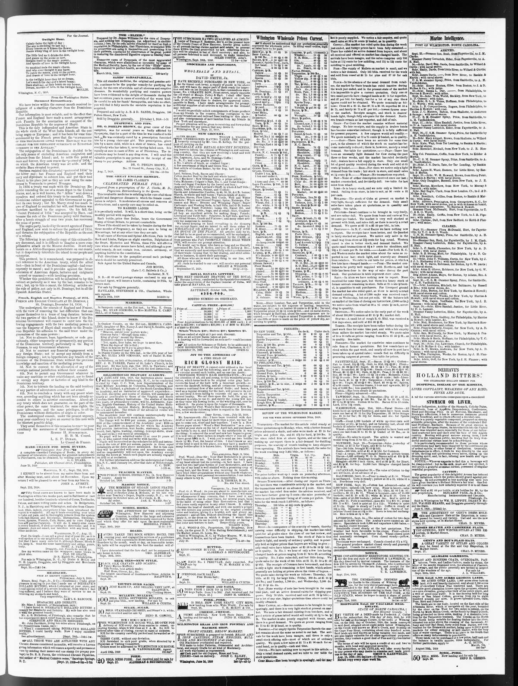

This protocol, be it remembered, was prepared in di rect reference
https://www.loc.gov/resource/sn84026536/1858-10-01/ed-1/?sp=3

See the original pageVer la página original
The Wilmington Journal reported on October 1, 1858, that a French, English, and Haytian protocol from December 14, 1854, constituted an attack on the Monroe Doctrine by establishing an Africo-European protectorate and interdicting the island to American people and enterprise. The newspaper stated that the protocol was prepared to cancel an American treaty and prohibit the future admission of American depots, factories, and emigrants. Additionally, the excerpt details the draft of the protocol involving English and French consuls aiming to secure engagements from the Dominican Government regarding a truce with Hayti.
El Wilmington Journal aseveró el 1 de octubre de 1858 que un protocolo suscrito por Francia, Inglaterra y Haití el 14 de diciembre de 1854 vulneraba frontalmente la Doctrina Monroe al instaurar un protectorado colombo-europeo y vedar el suelo insular a la estirpe y las empresas estadounidenses. El diario señalaba que dicho instrumento se fraguó para dejar sin efecto un tratado con Estados Unidos y proscribir el futuro establecimiento de factorías, almacenes e inmigrantes norteamericanos. El texto desglosa las minutas de aquel protocolo en las que los cónsules de Londres y París procuraban recabar compromisos del gobierno dominicano respecto a una tregua con Haití.
Where this standsEn qué punto está
The full text of this article is still being prepared. Until it is ready, this page carries a summary, the passage found on the page, and the link to the original, which is always one click away.El texto completo de este artículo aún se está preparando. Hasta que esté listo, esta página lleva un resumen, el pasaje encontrado en la página y el enlace al original, que siempre está a un clic.
The passage this summary was written fromEl pasaje del que se escribió este resumen
The passage where this article was found, copied from the newspaper page itself, reading errors and all. This is exactly what the summary above is based on.El pasaje donde se encontró este artículo, copiado de la propia página del periódico, con sus errores de lectura y todo. Esto es exactamente aquello en lo que se basa el resumen de arriba.
ary document, and it is difficult to imagine a more com
prehensive attack on the Monroe doctrine. It not only
insists on a Africo-European protectorate on our coasts,
but it despotically interdicts the island to our people and
enterprise.
This protocol, be it remembered, was prepared in di
rect reference to the American treaty, which the allied
heet then in lront ol the Dominican capital had come
expressly to cancel and it provides against the future
admission of American depots, factories and emigrants
armed or unarmed with insulting precision.
Whether this prohibition will be submitted to by this
cabinet as patiently as it wa3 by the last, remains to be
seen but, up to this moment, the following articles are
the rule of policy, not only in St. Domingo, but in all the
Spanish American States.
French, English and Huyttcn Protocol, of 1854.
French and English Consulate at St. Domings,
St. Domingo, December 14, 1854. j
The undersigned, the consuls of England and France,
with the view of removing the last difficulties that can
oppose themselves to a truce of long duration between
the two parties of this Island, desire to know if the Do
minican Government will consent to enter into the fol
lowing engagements with the two mediating powers in
case the Emperor of llayti shall coucede to the Domin
ican Republic his adhesion to the said truce under the
guarantees of the same powers
1st. Not to alienate, lease, hypothecate, or cede gra
tuitously, either temporarily or permanently, any portion
How to cite this articleCómo citar este artículo
Wilmington Journal. (1858). Wilmington, N.C., October 1, 18581 de octubre de 1858. DR in the American PressRD en la Prensa Norteamericana. Library of Congress, Chronicling America: https://www.loc.gov/resource/sn84026536/1858-10-01/ed-1/?sp=3
ReferencesReferencias
Library of Congress, Chronicling America: Wilmington Journal, October 1, 18581 de octubre de 1858.
Send an observationEnviar una observación
Does this article connect with your family, your town, or something you know? Did we get something wrong? Write to us. Observations go to the editor's inbox and are read by a person.¿Este artículo conecta con su familia, su pueblo o algo que usted conoce? ¿Nos equivocamos en algo? Escríbanos. Las observaciones llegan al buzón del editor y las lee una persona.
Send observationEnviar observación